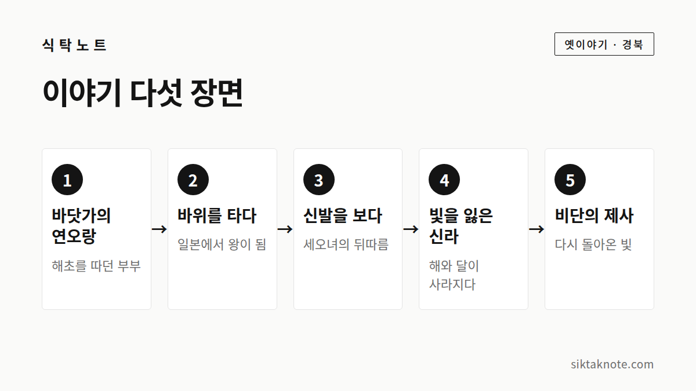

연오랑 세오녀 이야기 — 해와 달이 빛을 잃은 포항 바닷가의 전설

3줄 요약
- 삼국유사에 실린 이야기로, 연오랑과 세오녀 부부가 일본으로 건너가자 신라의 해와 달이 빛을 잃었다고 해요.
- 세오녀가 짠 비단으로 제사를 지내자 빛이 돌아왔고, 그 제사 터가 영일(迎日)이라는 지명의 유래로 전해져요.
- 포항의 연오랑세오녀 테마공원과 일월문화공원에서 이 이야기의 자취를 만날 수 있어요.

동쪽 바닷가의 부부
이 이야기는 『삼국유사』에 실려 있어요. 때는 신라 제8대 아달라왕 4년, 서기 157년으로 전해지고요. 동쪽 바닷가에 연오랑과 세오녀라는 부부가 살았어요.
어느 날 연오랑이 바닷가에서 해초를 따고 있는데, 갑자기 바위 하나가 연오랑을 태우고 일본으로 떠났다고 해요. 이야기에 따라서는 바위가 아니라 큰 물고기라고도 하고요. 일본 사람들은 연오랑을 보고 범상치 않은 사람이라며 왕으로 모셨어요.

신발을 보고 뒤따른 세오녀
남편이 돌아오지 않자 세오녀는 바닷가로 찾아 나섰어요. 바위 위에 남편의 신발이 벗어져 있는 걸 보고 그 바위에 올랐더니, 이번에는 세오녀를 태운 바위도 일본으로 움직였다고 해요. 일본 사람들은 세오녀를 만나 연오랑에게 알렸고, 부부는 다시 만났어요. 세오녀는 귀비가 되었지요.

해와 달이 빛을 잃은 신라
한편 두 사람이 떠난 신라에서는 해와 달이 빛을 잃고 말았어요. 하늘을 살피는 일관이 아뢰기를, 해와 달의 정기가 일본으로 건너갔기 때문이라고 했어요. 왕은 사신을 보내 두 사람을 데려오게 했고요.
연오랑은 사신에게, 자신이 일본에 온 것은 하늘이 시킨 일이라 돌아갈 수 없다고 말했다고 해요. 대신 세오녀가 짠 비단을 내주며, 이 비단으로 하늘에 제사를 지내라고 했어요.
비단의 제사, 돌아온 빛
사신이 비단을 가지고 돌아와 하늘에 제사를 지내자, 해와 달이 다시 빛을 되찾았어요. 그 비단은 임금의 창고에 보관하고 귀비고라는 이름을 붙였대요. 제사를 지낸 곳은 영일현(迎日縣) 또는 도기야라고 불렀다고 전해져요. 영일(迎日)은 "해를 맞이한다"는 뜻이에요.
이 이야기를 어떻게 읽어 왔을까
이 이야기를 바라보는 해석은 여러 가지예요.
태양신화로 읽는 시각이 있어요. 해와 달의 정기가 사람에게 깃든다고 믿었던 고대 신화의 한 모습으로 보는 거예요. '영일'이 해맞이를 뜻하는 것도 이 해석과 이어져요. 신라의 일부 집단이 일본으로 건너간 일을 이야기로 담았다고 보는 이주 이야기로 읽기도 하고요. 철을 다루는 사람과 비단을 짜는 사람, 곧 장인 부부가 일본으로 건너간 일이라고 보는 해석도 있는데, 이건 일부 해석이니 하나의 견해로만 봐 주세요.
일본 기록에서 연오랑이 정확히 누구인지는 학계에서도 의견이 갈려요. 그래서 이 이야기는 "정답이 없는 옛이야기"로 읽는 게 좋아요.
이야기가 남은 포항의 세 곳
연오랑세오녀 테마공원은 포항시 남구 동해면 호미로 3012에 있어요. 귀비고 전시관, 일월대, 거북바위, 신라마을이 있고요. 포항시 안내에는 09:00~18:00에 운영하고 월요일은 쉰다고 되어 있는데, 다른 안내와 시간이 다를 수 있어요. 054-289-7955로 전화해서 확인해 주세요.
일월문화공원은 포항시 남구 오천읍 세계리에 있어요. 일월지 인근에 2022년 말 문을 열었고, 연오랑과 세오녀의 동상과 제단 조형물이 있다고 해요. 운영 시간과 입장료는 확인하지 못했어요.
일월문화제는 해마다 10월에 열리던 행사예요. 일월신제를 지내는 곳은 동해면 도구리의 일월사당이고요. 올해 일정은 확인하지 못했으니, 포항시 소식을 살펴봐 주세요.
이야기를 듣고 나면
해와 달이 한 부부의 떠남으로 어두워졌다는 이야기에는, 사람의 정성이 하늘에 닿는다고 믿었던 옛 마음이 담겨 있어요. 포항 동해 바다에서 해가 떠오르는 걸 보게 된다면, "해를 맞이한다"는 영일이라는 이름을 떠올려 보세요.
이 글은 한국민족문화대백과사전과 포항시 자료 등에서 확인되는 줄거리를 바탕으로 새로 풀어 쓴 것이에요. 전해지는 자료에 따라 세부가 다를 수 있어요.